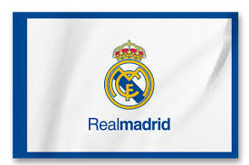

Real Madrid Club de Futbol
FIFA tarafından 20. yüzyılın en iyi futbol takımı olarak nitelendirilen[4][5] Real Madrid tarihi boyunca 35 La Liga, 20 Copa del Rey, 12 Supercopa de España, 14 UEFA Şampiyonlar Ligi, 2 UEFA Kupası,
5 UEFA Süper Kupası, 3 Kıtalararası Kupa ve 5 FIFA Kulüpler Dünya Kupası şampiyonluğu yaşamıştır.
Avrupa Kulüpler Birliği'nin kurucu üyelerinden biri olan Real Madrid, eski G-14 oluşumunun da kurucu üyelerinden birisidir. Kulübün isminde bulunan "Real" kelimesi İspanyolcada "kraliyet" anlamına gelmektedir ve bu unvan logosunda bulunan kraliyet tacı ile birlikte 1920 yılında XIII.
Alfonso tarafından kulübe verilmiştir.

İlk yıllar, İç Savaş ve Franco (1902-1945)
Real Madrid'in kökeni Institución Libre de Enseñanza akademisyenleri, öğrencileri ve Oxbridge mezunlarının 1897'de kurduğu Sky Futbol Kulübü'ne dek gitmektedir.[8] 1900 yılında bu kulüp Foot-Ball de Madrid ve Club Español de Madrid olmak üzere iki kulübe ayrılmıştır.
1929 yılında ilk İspanyol futbol ligi kurulmuş, Real Madrid son maçta Athletic Bilbao'ya yenilerek Barcelona'nın ardından ikinci olmuştur.[12] Real Madrid ilk lig şampiyonluğunu ise 1931–32 sezonunda kazanmıştır. Ertesi yıl tekrar lig şampiyonu olan Real Madrid aynı yıl Kral Kupası'nı da ka
zanarak çifte şampiyonluk yaşamıştır.